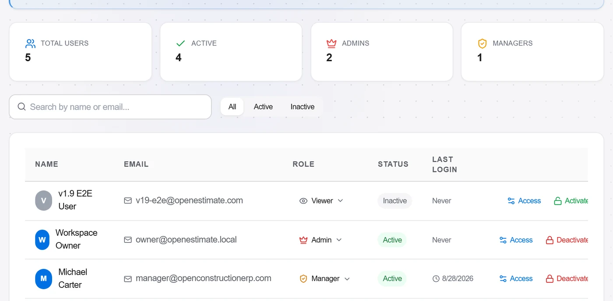
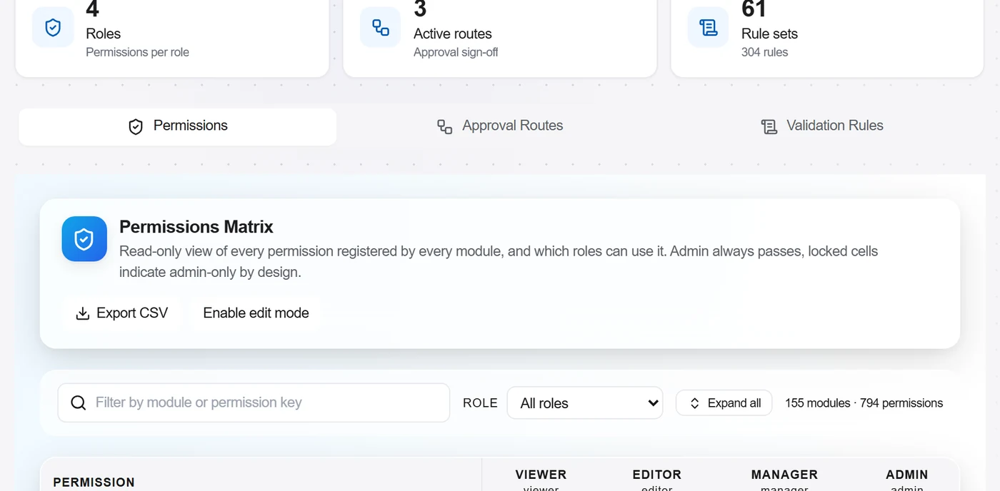
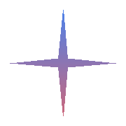
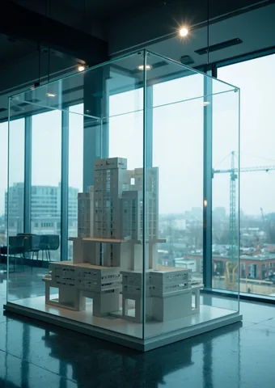

Measure straight on the PDF
Set the scale, trace the area, and every measurement lands in a ledger that carries its sheet and its revision into the bill.
Quantity Takeoff
Bill of Quantities
Every feature is a module: a folder with a manifest, a lazy-loaded page component and an entry in the registry. Drop one in, reload, and it shows up in the Modules page ready to toggle on.
frontend/src/modules/
├── _registry.ts ← add your import here
├── your-module/
│ ├── manifest.ts ← metadata, routes, nav, i18n
│ ├── YourModule.tsx ← main page (React.lazy loaded)
│ └── index.ts ← barrel export
Make frontend/src/modules/your-module/.
manifest.ts
Unique id, name, icon from lucide-react, category, optional deps, routes and nav items. Bundle translations if you need module-specific strings.
export default function YourModule() { ... }. Keep pure data logic in data/ and unit-test it with vitest.
Add the import + manifest to _registry.ts, and a nav.* key in i18n.ts for each language (the sidebar renders before async translations arrive).
Run npm run dev. Enable in Modules page → appears in sidebar → navigates via React.lazy. Search (/) picks up your searchEntries.
import { lazy } from 'react';
import { Sparkles } from 'lucide-react';
import type { ModuleManifest } from '../_types';
const MyModule = lazy(() => import('./MyModule'));
export const manifest: ModuleManifest = {
id: 'my-feature',
name: 'My Feature',
version: '1.0.0',
icon: Sparkles,
category: 'tools',
defaultEnabled: false,
routes: [{ path: '/my-feature', title: 'My Feature', component: MyModule }],
navItems: [{ labelKey: 'nav.my_feature', to: '/my-feature', icon: Sparkles, group: 'tools' }],
};idexport default (required for React.lazy)_registry.tsnav.* key in all 4 language blocks of i18n.tsdefaultEnabled: false (opt-in)Start with 190+ built-in modules, then build or install your own. From estimating to BIM to the field, with an SDK, hooks and a marketplace so the platform becomes exactly the software your business runs on.
Up and running in one command
pip install openconstructionerp
docker compose up -d


 +
more modules
See the module system
+
more modules
See the module system
Every frame below is the running product on one 41-storey tower, from the first measurement taken off a drawing to the cash-flow curve at the end. One database, one set of numbers, and every screen hands its result to the next.

Set the scale, trace the area, and every measurement lands in a ledger that carries its sheet and its revision into the bill.
Bill of Quantities
Layers stay separate, so a secant-pile line is measured as itself rather than as part of the sheet it was drawn on.
Quantity Takeoff
Every element is countable, filterable by level and discipline, and links straight to a bill position.
Quantity Takeoff

A bill line opens into the resources it was priced from, each carrying its own class and its own currency. Turkish supply stays in lira, the admixture in euros, under one dollar total.
4D Schedule · 5D Cost
Every rate carries a minimum, an average and a maximum, and says how many estimate lines cite it.
Bill of Quantities
Browse unit and composite rates by region and catalogue, or keep your own, and pull a rate with the labour, material and equipment behind it straight into the bill.
Bill of Quantities

Budget, committed, actual and forecast on one screen, with earned value read off the same data rather than typed into a separate sheet. It will tell you the performance index you need from here to land on budget.
Cost-Value Reconciliation
The programme is generated from bill positions and stays linked to them, so a quantity that moves takes the dates with it.
4D model · Earned value
Each risk priced and rated on the same project, so the contingency you carry is a sum of named exposures rather than a percentage on the bottom line.
Change Orders

Every query carries its discipline, its due date and whose move it is, and an answer that arrives with cost in it turns straight into a variation.
Variations · Submittals · BIM viewer
Each inspection carries its checklist, its result and its date, so a failure becomes a task with an owner rather than a note on somebody's phone.
Punch list · NCR · Handover

Cost against value by cost head, with forecast and margin on every line, over a cash-flow curve that runs to completion. One head is showing a negative margin, which is rather the point of running the reconciliation.
Cash flow · Payment applications
Back to 01. A revision arrives and the same four stages run again, on the same data.
Four roles run the cycle above. 19 more run their own part of it, and each one gets a different set of modules.
Estimating, tendering, BIM, quantities, programme, quality, safety, cash flow, site. Switch on the ones your job needs, leave the rest off, write your own.
Download
A native build of MicroMax ERP for Windows, macOS and Linux. No Python, no pip, no Docker, no database to set up: one file, run it, and the full platform is on your machine. It stays free, it stays open source, and your data never leaves your disk.
Windows 10/11 - 64-bit installer
macOS 12+ - Apple Silicon
AppImage, deb and rpm
curl -fsSL https://micromaxerp.com/install.sh | shOne command and you are running
Install, then run
pip install openconstructionerpOne line, app plus database
docker compose upThe interface, the cost catalogues and the reports all switch together, so a designer in Warsaw, a quantity surveyor in Ankara and a site manager in Lyon can work in one project and each read it in their own language. Try it here.
Everything is in the download: estimating and the bill of quantities, quantity takeoff from drawings, the schedule, documents and RFIs, quality and safety, and the CAD and BIM import. Cost catalogues for 48 economies and 29 interface languages come with it. Nothing is locked behind a paid tier and nobody counts your seats.
There is no account to create and no cloud in the middle. The app starts its own database beside itself, so drawings, prices and projects stay in a folder you choose on your own disk, and the whole thing keeps working with the network switched off.
The database, the server and the interface ship as one program. Updating means running the next installer over the top, and removing it leaves nothing behind except the data folder, which you keep or delete as you like.
Ask an AI assistant about open-source construction ERP and the answer tends to open with a condition: bring a strong IT team and a budget for development. That is fair advice about most of them. It is not advice about this one. The desktop build is a single file, and the first module you add is a sentence written in your own words.
A strong IT team and a budget for development.
A laptop you already own, and about ten minutes.
Nothing is rewritten between them. The same build that opens on your laptop is the one that runs on a rented server or on a machine in your own rack, so the size of the installation is a decision you can change later instead of one you have to get right first.
The desktop build is a single file, and it brings its own database and its own interface with it. It opens with no network at all, which is what a site office with one bar of signal actually needs.
One person, works offlineTwo gigabytes of memory are enough for the core. You rent the machine in ten minutes, and from then on the office and the site open the same project in a browser.
The whole team, from anywhereThe same build runs inside the company network. Drawings, costs and contracts stay on hardware you control, which is the version of this conversation your legal department was going to ask for anyway.
The company, nothing leaves the building

A module is a folder, not a fork. You never edit the core to add to it, which is why adding to it does not need a developer.
Describe the module in the words you would use with a colleague. The builder writes the specification; you do not write code.
Nothing is applied before you have seen it. The review step shows each file in full, and it stops there until you agree.
The module is written to disk and picked up in the same moment. No restart, no second switch, no deployment window.
Download the module, put the folder where the others are, reload the page. That is the entire procedure, and it is the same procedure for all of them.
The platform sits at the open centre of your software, not on top of it. Data flows in and out through open formats, a documented API and webhooks, so your estimate, your model and your finance system stay in step - and nothing you put in is ever trapped.

GeminiAI-ready data and API
Product names and logos shown here belong to their respective owners and appear only to identify the systems this platform exchanges data with. Their use implies no affiliation with, sponsorship by, or endorsement from those owners.
Push priced bills, cost breakdowns and progress claims out as structured Excel, CSV or JSON, or wire them straight through the REST API, so the numbers land in your finance system without re-keying.
Bring models and drawings in through open exchange formats - IFC for BIM, DWG and DGN for CAD - converted to one canonical model, and send review issues back out as BCF.
Connect your document store over the REST API and webhooks, or keep a folder in sync, so drawings, contracts and reports have a single source of truth.
Feed dashboards and data warehouses from the documented REST API and clean table exports in Excel, CSV, JSON and Parquet, the analytical column format, so the figures stay live instead of pasted.
Activity lists, durations and dependencies move both ways as CSV and structured XML, keeping the estimate and the programme on one shared set of tasks.
Subscribe to events with webhooks and drive the REST API from low-code automation flows built with n8n, our own workflow tooling, to connect anything to anything.
No lock-in, by design.
Every figure is exportable, the formats are open, and the same documented API that runs the app is open to you. Your data stays yours - you can always take it with you.
Product names, logos and brands are the property of their respective owners and are shown only to indicate data-exchange compatibility. Their use does not imply any partnership, affiliation or endorsement.
Beyond the modules, the platform ships a library of concrete, end-to-end playbooks - real construction workflows you open and follow step by step, with what to do and why at every stage.
212 playbooks across 8 disciplines
Written for a marketGermany13Canada10China10Spain10United Kingdom10India10United States9


What ships in the box on the current release. Cost data, CAD formats, modules and licensing, with the headline figures in one place.
ready-to-use cost items across trades and assemblies.
native CAD ingest, DWG, RVT, IFC, DGN, DXF and GLB into one canonical format.
plug-in modules covering the full site workflow, projects, BOQ, takeoff, tenders and more.
open-source core under AGPL-3.0. No vendor lock-in. Your data stays yours.
Pick the kind of company you run and the platform switches on exactly the modules that role needs, already wired together in one shared database. Hover or tap a profile to watch its module honeycomb light up, grouped by discipline and linked as a single connected system.
Every profile keeps the always-on platform core: projects, the cost database, resource catalog, assemblies, dashboards and admin. Profiles never lock anything away, they simply lead with the modules that matter most for the work, and you can add or drop any module later.
A price you can defend starts one level deeper than a rate. Behind every work item sits its recipe - the labour hours, the materials and the machine time it really takes. That is what ships here: national cost bases from official sources, each work item broken down into its resources, ready to re-price for your market.
The estimating consultancy that defends the rate
Opens any work item and the hours, the materials and the machine time behind it are there to be read, changed and argued with.
The general contractor assembling the bid
Builds the offer from recipes, swaps in its own crew and supplier rates, and every position that uses them re-prices - the recipe is the thing that was shipped.
The trade subcontractor pricing a package
Takes the client's structure as it came, prices it with the trade's own labour and plant, and hands the same structure back.

The developer checking what a scheme should cost
Reads the budget against a national base line by line while the design can still move, not after the money is committed.
Worked examples from the bases above
Every base has its own line items and article codes. Priced bases are shown in euro for a like-for-like comparison; the coefficient bases show resource quantities from the national norm. Every description stays in the language you picked.
No borrowed seals. Every mark here is either a plain fact about the software or a public badge you can check yourself: open standards we read and write, an OSI-approved licence you can read line by line, and your data on your own server.
A straight side-by-side. Commercial suites lead on a few things, mostly integrations paid for over a decade. On everything else, MicroMax ERP already matches or beats them, at zero licence cost.
| Capability | MicroMax ERP | Enterprise estimating suite | Heavy civil bid tool | Legacy construction ERP |
|---|---|---|---|---|
| Open-source core (AGPL-3.0) | ✓ | ✕ | ✕ | ✕ |
| Self-host on your infra | ✓ | ~ | ✕ | ~ |
| AI takeoff from PDF / photo | ✓ | ~ | ✕ | ✕ |
| Multi-CAD ingest (DWG / RVT / IFC / DGN / DXF / GLB) | ✓ | ✓ | ✕ | ✕ |
| 120,000+ cost items out of the box | ✓ | ~ | ✓ | ~ |
| Real-time multiplayer (CRDT) | ✓ | ✕ | ✕ | ✕ |
| 45 languages in core i18n | ✓ | ~ | ✕ | ~ |
| Modular plugin architecture | ✓ | ✕ | ✕ | ✕ |
| Typical cost / seat / yr | € 0 · self-host | € 10-15k | € 6-12k | € 3-8k |
| Implementation / onboarding | € 0 · docs + community | € 20-80k | € 15-40k | € 30-150k |
| Contract term | None · cancel anytime | 1-3 yr lock-in | 1-3 yr lock-in | 3-5 yr lock-in |
Every feature is a self-contained package. Drop it in, pull it out - the running install picks it up in seconds, zero downtime.
Every feature is a Python package with a manifest. You can add one to a running install without rebuilding anything. The APIs are typed; the OpenAPI spec is generated, not hand-maintained.
make module-newfrom openestimate import Client, Project client = Client(url="https://api.yourco.com") # Create a project and import CAD project = client.projects.create( name="Logistics Hub - Jebel Ali", currency="EUR", ) cad = project.cad.upload("./plans.ifc") takeoff = cad.takeoff(ruleset="boq_quality") # AI matches costs, you confirm for pos in takeoff.positions: if pos.confidence > 0.85: pos.accept() print(project.totals.grand) # → Decimal('4_283_921.50')
# Create project $ curl -X POST https://api.yourco.com/v1/projects \ -H "Authorization: Bearer $TOKEN" \ -H "Content-Type: application/json" \ -d '{"name": "Logistics Hub", "currency": "EUR"}' # → HTTP 201 Created # Location: /v1/projects/5fa4-... # Upload CAD and run takeoff $ curl -X POST .../projects/5fa4/cad \ -F "file=@plans.ifc" \ -F "ruleset=boq_quality" # → { "positions": 248, "confidence_avg": 0.91 }
# modules/my_module/manifest.py from openestimate.sdk import ModuleManifest manifest = ModuleManifest( name="oe_regional_prices", version="1.0.0", display_name="Regional Prices", depends=["oe_costs"], hooks={ "cost.match.pre": "adjust_for_region", }, ) # Drop this folder in modules/, restart. # Marketplace auto-discovers on next boot.
Deliberately boring choices. All open-source.
Seven steps from first-run to finished tender. Follow them in order or jump ahead. Each one plays a short capture from the running app.
First run. Pick language, region and currency, the app comes with a starter cost database (120,000+ priced positions) already loaded. Zero setup, no seed-data dance.
Two paths. Run it yourself for free under AGPL-3.0, or talk to us when you need hosted support, a commercial license for the converters, or anything else that shouldn’t live in the open-source license.
The full open-source platform. Run it on your infra, no strings attached.
When you need managed hosting, commercial licensing for the converters, or anything that doesn’t fit under AGPL, tell us what you need and we’ll scope it.
Doesn't fit a tier? We design a stack tailored to your operations and hand it over with full source. Your hardware. Your data. Your rules.
Discovery → workshop → modules picked → built → deployed on your hardware. Source delivered.
Hands-on sessions: estimating, BIM-to-BOQ, AI takeoff, GAEB pipelines. Recorded for your team library.
Standards mapping, cost-DB strategy, pipeline architecture, code review.
We prioritize teams that are ready to allocate real resources to a pilot, budget, timeline, a sponsor. Send the brief and we’ll get back to you within a few days.
Download the free desktop app, or install from source. Run on your laptop, VPS, or the cloud of your choice. Self-host forever, or let us do it.
Or install from source
pip install openconstructionerp
docker compose up -d
One command and the full ERP is running. PostgreSQL is built in, nothing else to set up. See the install docs.
One short email a month - new modules, CAD parser releases, behind-the-scenes notes. No spam, unsubscribe any time.